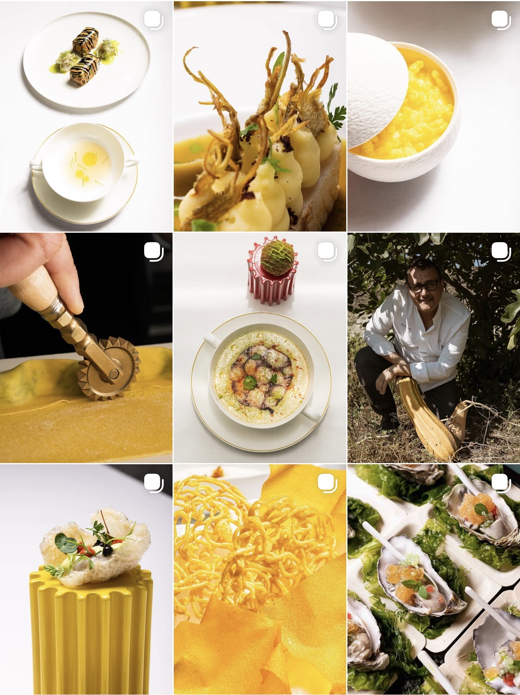
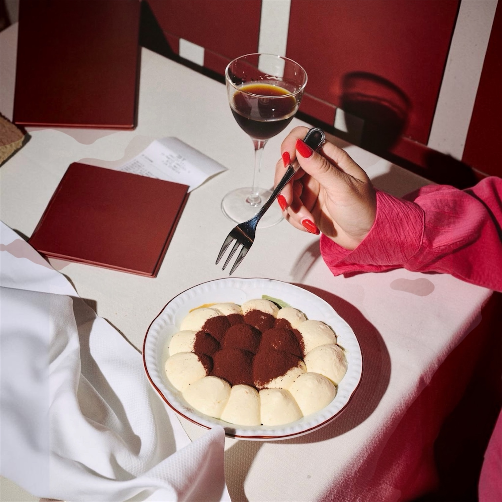
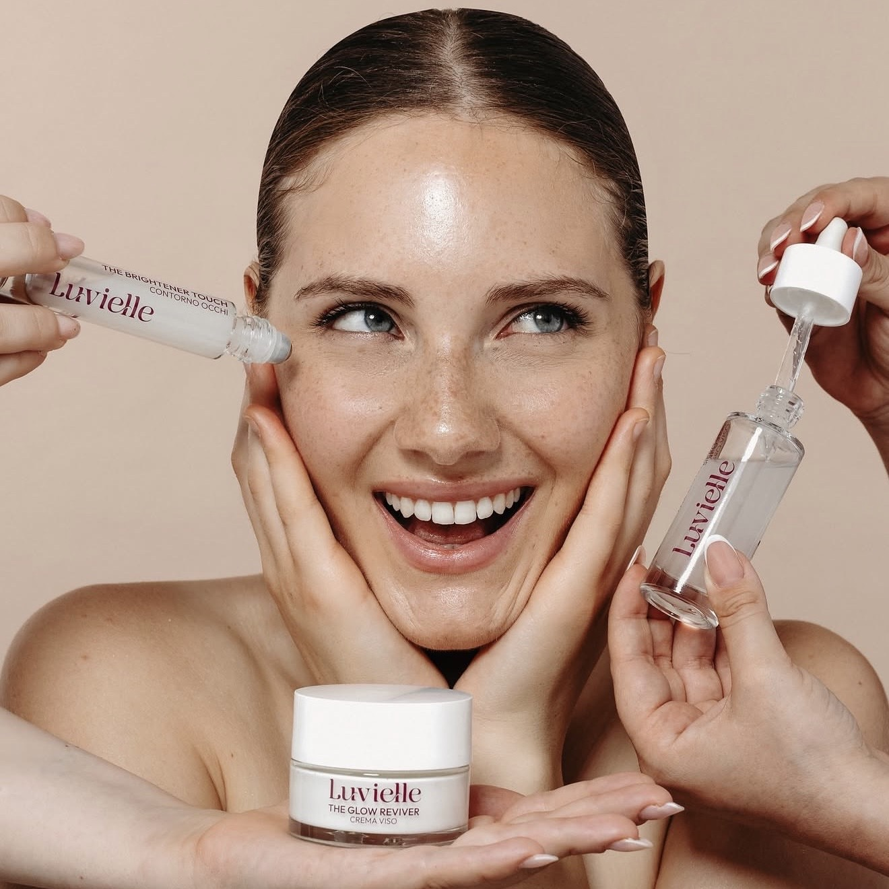
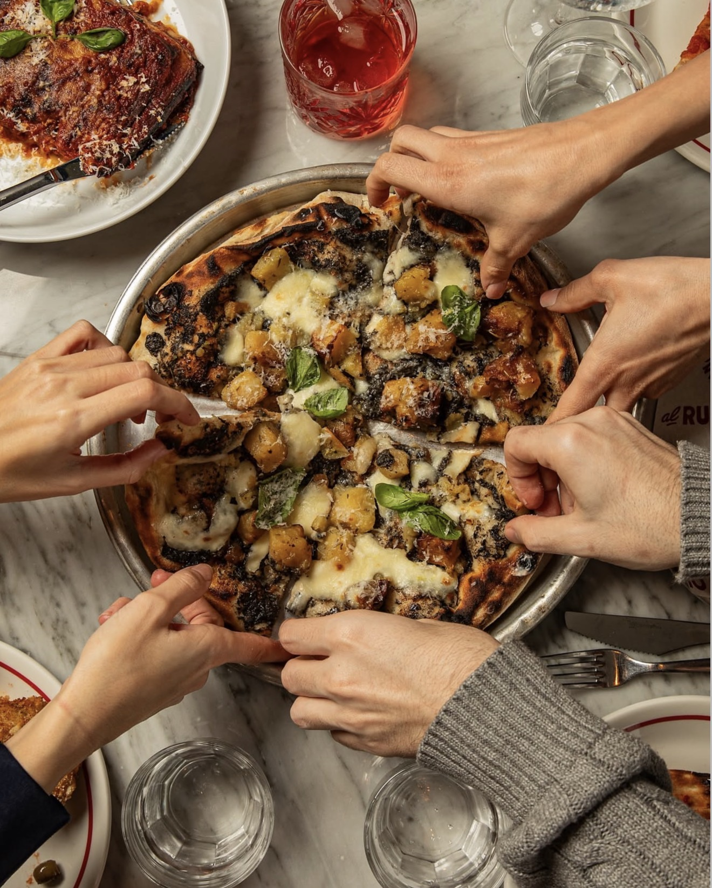
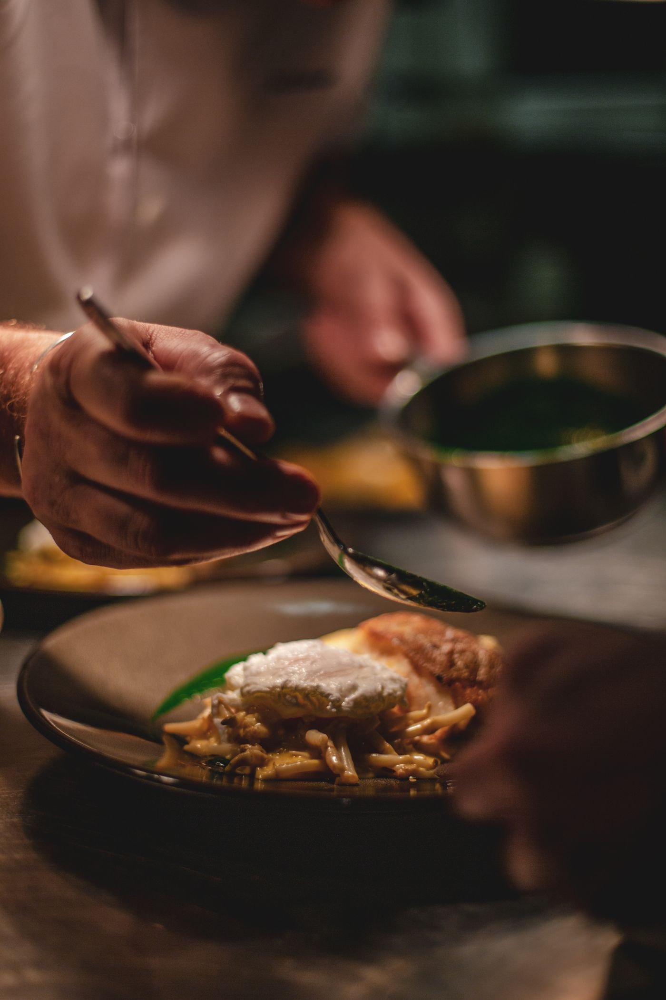
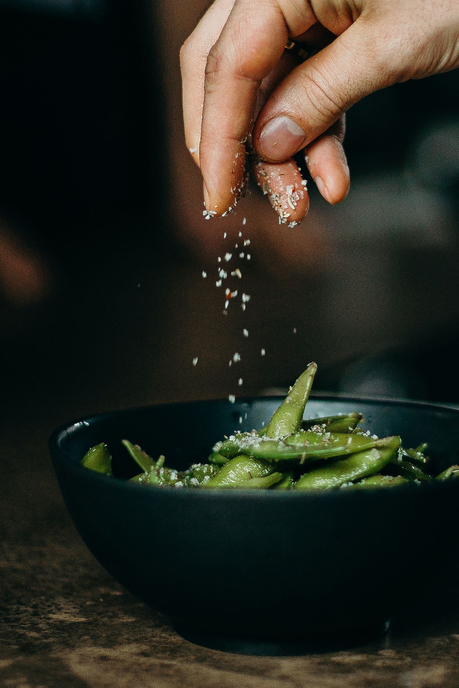
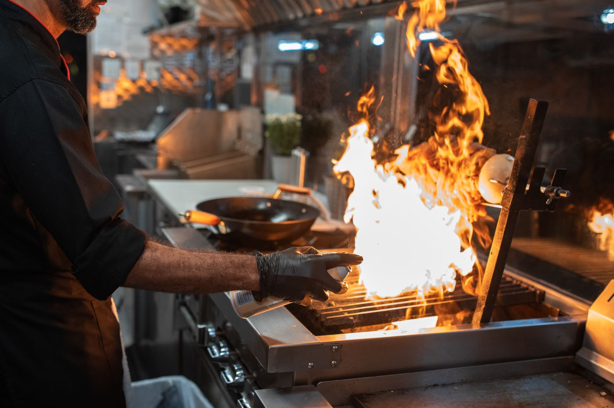
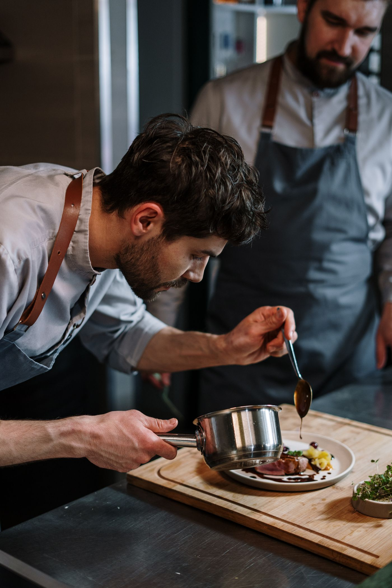
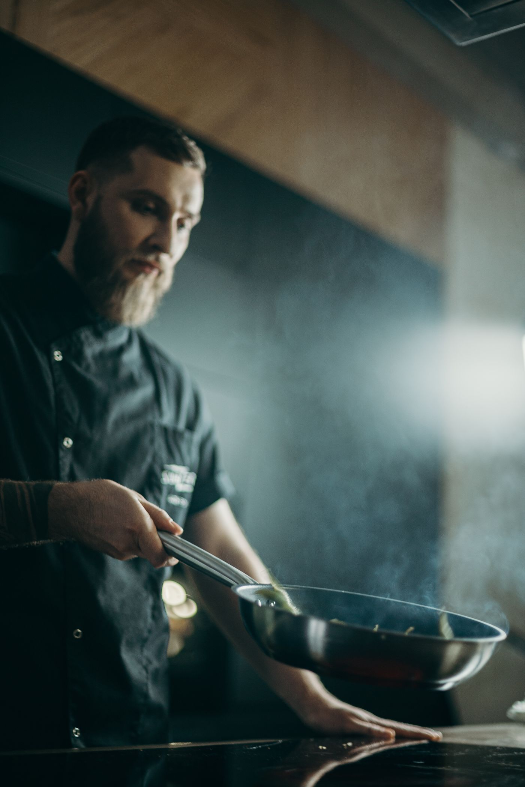
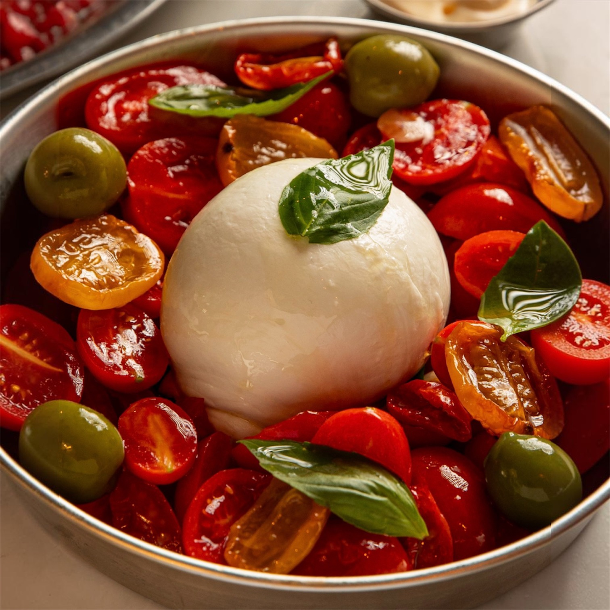

POV by NAUB
Ogni attività, un punto di vista
Il tuo valore merita di essere visto
La qualità del tuo lavoro deve riconoscersi prima ancora di entrare dalla porta.
Costruiamo identità e comunicazione per attività locali che vogliono distinguersi.
Una cultura visiva da brand
NAUB è una creative agency. Lavoriamo tra brand, fashion, cultura e digital.
Portiamo questa sensibilità nelle attività del territorio, con una direzione creativa costruita sulla loro personalità.

Un’identità che ti somiglia
- Posizionamento
- Chi sei, a chi parli, perché sceglierti.
- Identità visiva
- Logo, colori e tipografia con un carattere preciso.
- Direzione creativa
- Un linguaggio per immagini, parole e contenuti.
- Applicazioni
- L’identità prende forma nei tuoi punti di contatto.
Il gusto comincia con gli occhi
Diamo forma al carattere del locale, dalla prima immagine all’esperienza al tavolo.
- Identità e menu
- Fotografia food e video
- Social, sito e campagne


Uno stile riconoscibile
La cura che metti nel tuo lavoro diventa il linguaggio del salone.
- Identità
- Shooting hair e beauty
- Contenuti e prenotazioni online
Immagini con carattere
Ogni produzione parte da una direzione: cosa raccontare, come mostrarlo e dove farlo vivere.
- Concept e art direction
- Produzione fotografica e video
- Formati per social, sito e campagne





Un’immagine forte. Un percorso chiaro per sceglierti.
Presenza
Sito e contenuti coerenti con l’esperienza che offri.
Attivazione
Campagne sul territorio e percorsi di contatto o prenotazione.
Obiettivi e indicatori si definiscono insieme, in base all’attività e ai canali attivati.
La direzione, prima dei contenuti
- 01AscoltoConosciamo attività, pubblico e obiettivi.
- 02DirezioneDefiniamo posizionamento e linguaggio visivo.
- 03ProduzioneRealizziamo identità, materiali e contenuti.
- 04ContinuitàSeguiamo la comunicazione e ne leggiamo i risultati.

Il progetto giusto per il tuo momento
- Nuova aperturaCostruiamo l’identità e prepariamo il debutto.
- RiposizionamentoAllineiamo l’immagine al livello della tua attività.
- Direzione continuativaCuriamo la comunicazione nel tempo.
Ambito, tempi e investimento si definiscono su un progetto condiviso.
Un’attività locale. Un’identità che resta.
